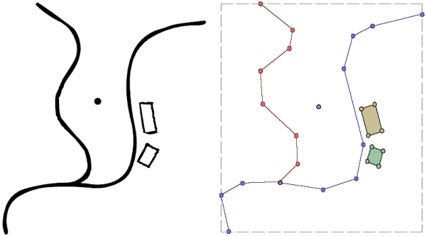
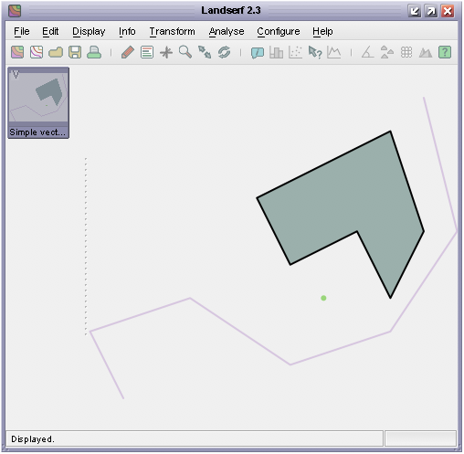
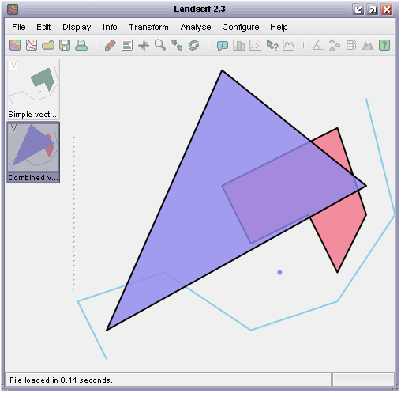

VectorMap and GISVector. GISVectors from sets of geometric coordinates.GISVectors to it and associate it with metadata
In contrast with raster maps, vector maps are used to represent collections discrete spatial objects with
known boundaries. Those objects may be points in space, lines, or areas defined by linear boundaries. A
vector map may contain any number of these objects that may be separate from each other, joined, or overlapping.

Simple point, line and area features and their vector map representation.
An individual vector object (such as the red line, blue line, yellow or green rectangle or point above) is represented by
the class GISVector. This stores the geometry of the object as a series of (x,y) coordinate pairs. Implicit in this
model is that lines and area boundaries are defined by joining consecutive pairs with straight line segments. A GISVector
also inherits SpatialObject just as the RasterMap class does. It therefore has methods for defining its bounds,
performing simple spatial comparisons, and manipulating its attribute(s). The VectorMap class simply assembles a collection
of the GISVectors into a single object that itself has bounds and other metadata attached to it.
Creating a vector map is a simple process and just requires calling one of VectorMap's constructors. Like the RasterMap
class, you can define the bounds of the object at the point of creation, copy the contents of an existing spatial object, or simply
create an empty vector map. Unlike rasters, it is more common for vector maps to grow and shrink as objects are added and removed, so
it is quite usual initially to create an empty vector map object:
VectorMap myVectorMap = new VectorMap();
The geometry of an individual object within a vector map is stored in a GISVector object. The object also stores its
type - one of GISVector.POINT, GISVector.LINE or GISVector.AREA, as well as its attribute
value. These can all be set in GISVector's constructor, or added later using an appropriate method.
The class below shows how some simple vector objects may be created and added to a vector map which is then saved to disk.
1 2 3 4 5 6 7 8 9 10 11 12 13 14 15 16 17 18 19 20 21 22 23 24 25 26 27 28 29 30 31 32 33 34 35 36 37 38 39 40 41 42 43 44 45 46 47 48 49 50 51 52 53 54 55 56 |
import jwo.landserf.structure.*; // For spatial objects. import jwo.landserf.process.io.*; // For file handling. // ********************************************************** /** Creates a simple vector map containing some GISVectors. * Demonstrates how vector maps can be created and written. * @author Jo Wood * @version 1.1, 16th October, 2007 */ // ********************************************************** public class SimpleVectorMap { //------------------ Starter Method ----------------- public static void main(String[] args) { new SimpleVectorMap(); } //------------------- Constructor ------------------- public SimpleVectorMap() { // Create an empty vector map, then place some GISVectors within it. VectorMap vectorMap = new VectorMap(); float riverX[] = {2,1,4,7,10,12,11}; float riverY[] = {2,4,5,3, 4, 7,11}; GISVector road = new GISVector(riverX,riverY,SpatialModel.LINE,10); vectorMap.add(road); float buildingX[] = {6,10,11,10,9,7}; float buildingY[] = {8,10, 7, 5,7,6}; GISVector building = new GISVector(buildingX,buildingY,SpatialModel.AREA,20); vectorMap.add(building); GISVector pump = new GISVector(8,5,30); vectorMap.add(pump); // Add some simple metadata. Header header = new Header("Simple vector map"); header.setNotes("Simple vector map containing a river, building and pump location."); vectorMap.setHeader(header); // Find range of values and create a random colour table. float min = vectorMap.getMinAttribute(); float max = vectorMap.getMaxAttribute(); vectorMap.setColourTable(ColourTable.getPresetColourTable(ColourTable.RANDOM,min,max)); // Write new vector map to file. LandSerfIO.write(vectorMap,"simple.vec"); } } |
Note the similarity with the way in which raster map metadata are added and saved to disk. The vector map that is created as a result of this class is shown below.
 VectorMap output from the SimpleVectorMap class.
Vector maps can be read much as raster maps using the static method LandSerfIO.readVector(fileName). Altering
the metadata associated with a vector map is identical to that of a raster. To manipulate an individual GISVector
within a vector map, the set of GISVectors contained can be iteratively extracted using the method getGISVectors().
This method (slightly unfortunately for naming purposes) returns a Java Vector of GISVectors. To process
each object in turn, it would be normal to create an iterator:
Iterator i = myVectorMap.getGISVectors().iterator();
while (i.hasNext())
{
GISVector gisVect = (GISVector)i.next();
// Do something with each GISVector here.
}
Note that LandSerf 2.3 does not use generics to organise collections, so Java 1.5 'for-each' loops with generics cannot be used. Future releases of LandSerf will require Java 1.5 or above and will make use of generics for all collections.
Depending on what you wish to do, it is sometime possible to avoid manipulating GISVector objects directly by calling
appropriate methods from the VectorMap object. The example below shows how two vector maps can be combined
with simple clone() and add() methods.
1 2 3 4 5 6 7 8 9 10 11 12 13 14 15 16 17 18 19 20 21 22 23 24 25 26 27 28 29 30 31 32 33 34 35 36 37 38 39 40 41 42 43 44 45 46 47 48 49 50 51 52 53 54 55 56 57 58 |
import jwo.landserf.structure.*; // For spatial object class. import jwo.landserf.process.io.*; // For file handling. // ********************************************************** /** Combines two vector maps by overlaying one on the other * and creating new objects from their union. * Demonstrates how the GISVector maps can be manipulated. * @author Jo Wood * @version 1.2, 16th October, 2007 */ // ********************************************************** public class CombineVectors { //------------------ Starter Method ----------------- public static void main(String[] args) { new CombineVectors(); } //------------------- Constructor ------------------- public CombineVectors() { // Open an existing vector map. VectorMap vectorMap1 = LandSerfIO.readVector("simple.vec"); // Create a simple vector map to overlay over the first one. VectorMap vectorMap2 = new VectorMap(); float triangleX[] = {6,11,2}; float triangleY[] = {12,8,3}; GISVector triangle = new GISVector(triangleX,triangleY,SpatialModel.AREA,30); vectorMap2.add(triangle); // Add some simple metadata. Header header = new Header("Triangular vector map"); header.setNotes("Simple vector map containing a triangular GISVector."); vectorMap2.setHeader(header); // Clone the first vector map and add the second to it. VectorMap vectorMap3 = (VectorMap)vectorMap1.clone(); vectorMap3.add(vectorMap2); vectorMap3.getHeader().setTitle("Combined vector map"); vectorMap3.getHeader().setNotes("Union of "+vectorMap1.getHeader().getTitle()+ " and "+vectorMap2.getHeader().getTitle()); float min = vectorMap3.getMinAttribute(); float max = vectorMap3.getMaxAttribute(); vectorMap3.setColourTable(ColourTable.getPresetColourTable(ColourTable.RANDOM,min,max)); // Write new vector map to file. LandSerfIO.write(vectorMap3,"overlay.vec"); } } |
The output from this class is shown in LandSerf below:

VectorMap output from the CombineVectors class.
GISVector contained within the input
map, identify its attribute, and then create a new vector map or add it to an existing one.
CombineVectors class shown above so that it uses the existing colour tables of the combined
vector maps (rather than creating a random one as above). You will have to consider what to do if the two vector maps
have different colours assigned to the same attribute value.